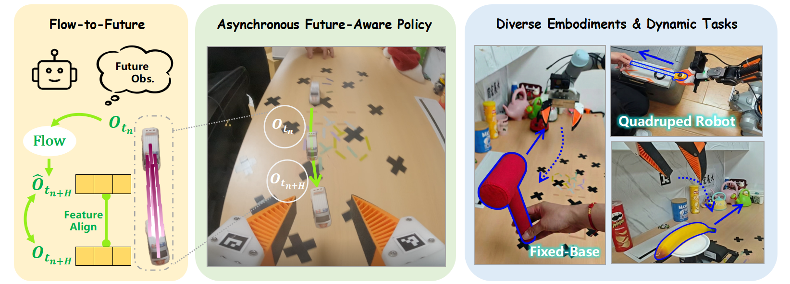
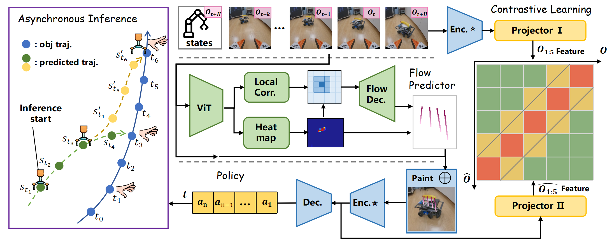
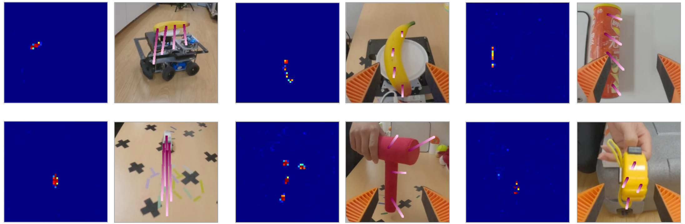
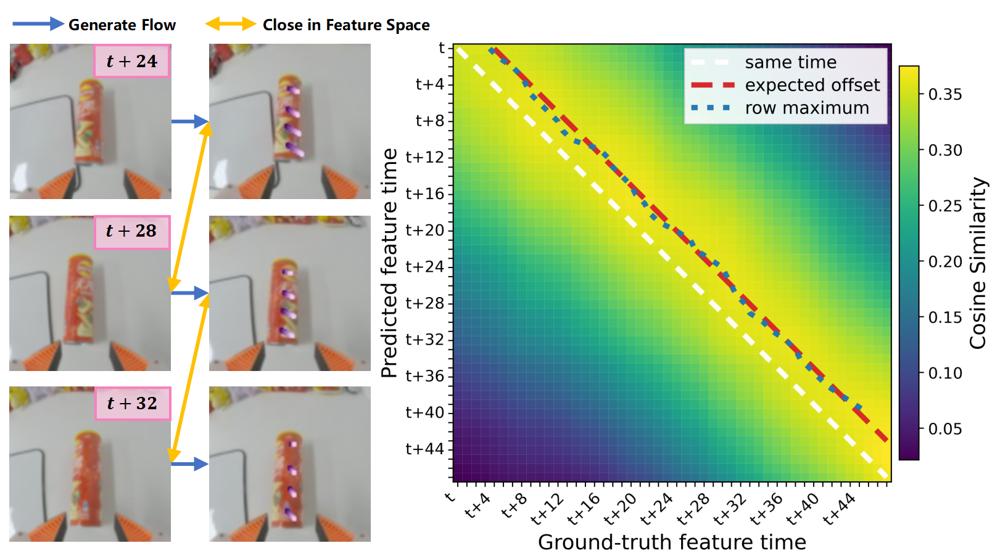
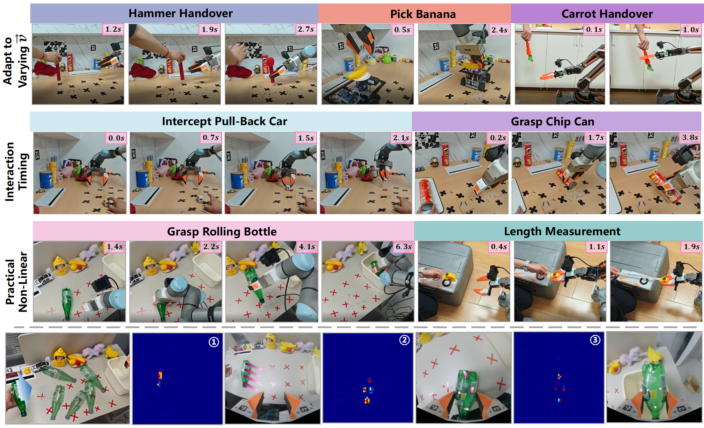
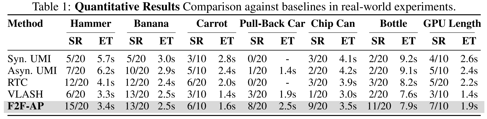
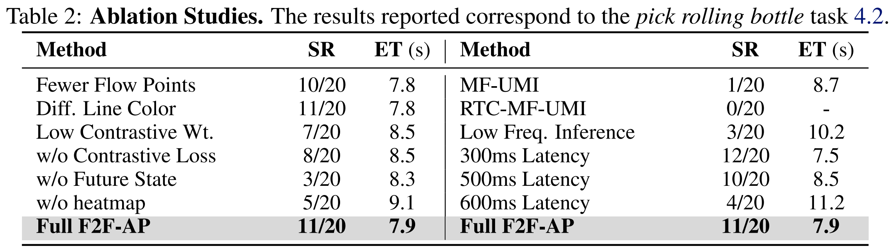

Code (GitHub)
Code (GitHub)
Asynchronous inference has emerged as a prevalent paradigm in robotic manipulation, achieving significant progress in ensuring trajectory smoothness and efficiency. However, a systemic challenge remains unresolved, as inherent latency causes generated actions to inevitably lag behind the real-time environment. This issue is particularly exacerbated in dynamic scenarios, where such temporal misalignment severely compromises the policy's ability to interpret and react to rapidly evolving surroundings. In this paper, we propose a novel framework that leverages predicted object flow to synthesize future observations, incorporating a flow-based contrastive learning objective to align the visual feature representations of predicted observations with ground-truth future states. Empowered by this anticipated visual context, our asynchronous policy gains the capacity for proactive planning and motion, enabling it to explicitly compensate for latency and robustly execute manipulation tasks involving actively moving objects. Experimental results demonstrate that our approach significantly enhances responsiveness and success rates in complex dynamic manipulation tasks.

F2F-AP aims to resolve the latency problem inherent in asynchronous policies by utilizing temporally aligned future proprioceptive states and visual observations, which can be formulated as follows:
π(at+H:t+H+n | st+H, ôt+H)
First, F2F-AP employs predicted object flow as a bridge to synthesize future observations, ensuring alignment with the ground truth within the feature space. Furthermore, the action chunks generated by F2F-AP are strictly aligned with the exact moment of execution, effectively eliminating the need for discarding initial H action steps or employing post-hoc action fusion algorithms. Through this design, F2F-AP substantially improves the model's performance on dynamic tasks.

Left: Illustration of the asynchronous inference achieved by F2F-AP. The model plans from a future state st3 towards the anticipated position t6 of the interacting object at timestamp t1, enabling advance planning and motion despite real-world system latency. Middle: The model takes robot states and multi-frame RGB images as input. A Flow Predictor extracts object flow to synthesize augmented future observations, which are then processed by the Policy as future observation to generate action chunks. Right: We introduce contrastive learning to minimize the feature distance between predicted and real future observations. The ★ indicates that these features share the same encoder.
A task-specific flow predictor, robust to occlusion, can be trained using under 10 minutes of video data. The figure above illustrates the flow generation across different tasks.

This heatmap visualizes the feature-space similarity between flow-augmented observations and future RGB observations. The shifted high-similarity band indicates that F2F-AP learns to align current flow-enhanced visual features with future observations, providing the policy with predictive visual information.

To assess the capability of F2F-AP in real-time dynamic scenarios, we designed seven tasks for interacting with moving objects, executed on two different robots.

Through comparative experiments involving different inference modalities for imitation learning policies, we demonstrate that F2F-AP significantly enhances policy performance in real-time dynamic tasks with system latency.

To further validate the efficacy of our policy design, we conducted ablation studies targeting key aspects, including hyperparameters, core components, observation history, and varying latency levels.
